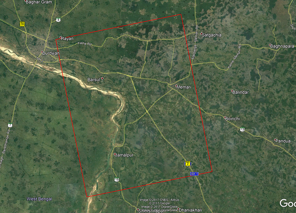
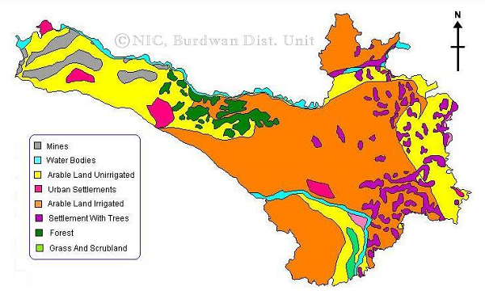
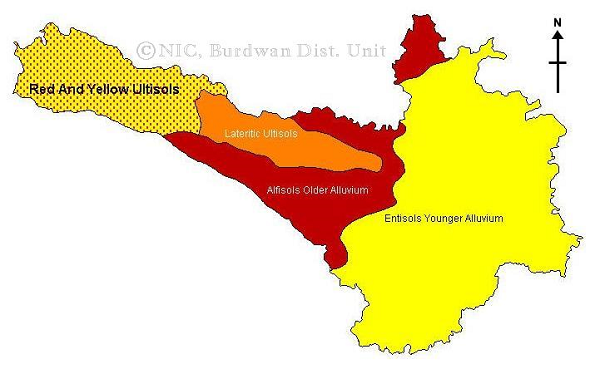

Test Site- Bardhaman
This test site located at the Bardhaman District of West Bengal, India that extends from 23°18'39.43"N, 87°51'58.22"E to 23°00'00.48"N and 88°11'04.58"E. The test site center coordinate is 23°08'28.36"N, 88°01'22.89"E. The test site covers the Damodar river basin which has a gentle slope and covers mostly new alluvium soil zone. The test site is a predominantly agricultural area and rice is the major crop, which is grown in two distinct seasons, monsoon (June-October) and summer (February-May). Beside the rice other crops includes potato (early winter), mustard, sesame, jute and sugarcane. The study addresses the main season crop, which is having a wide transplantation calendar extending from June end to August.
Test Site Images
Bardhaman Test Site in Google Earth; Red rectangle represents RADARSAT-2 foot print.
Land use map of Bardhaman District © NIC, Govt. of India.
Soil type map of Bardhaman District © NIC, Govt. of India.